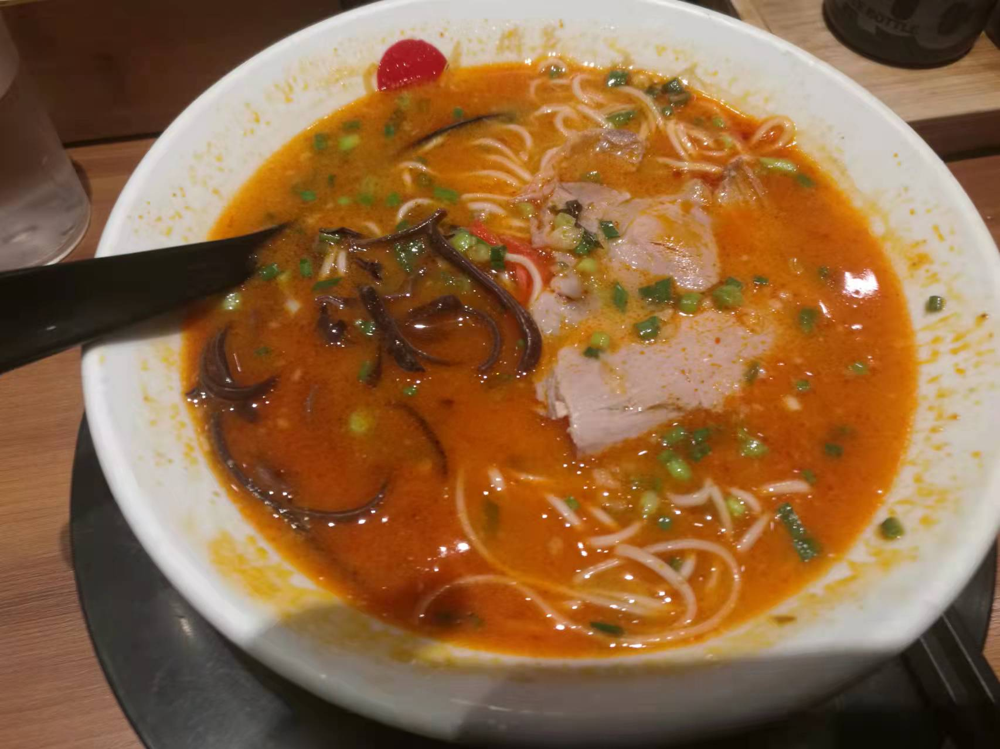
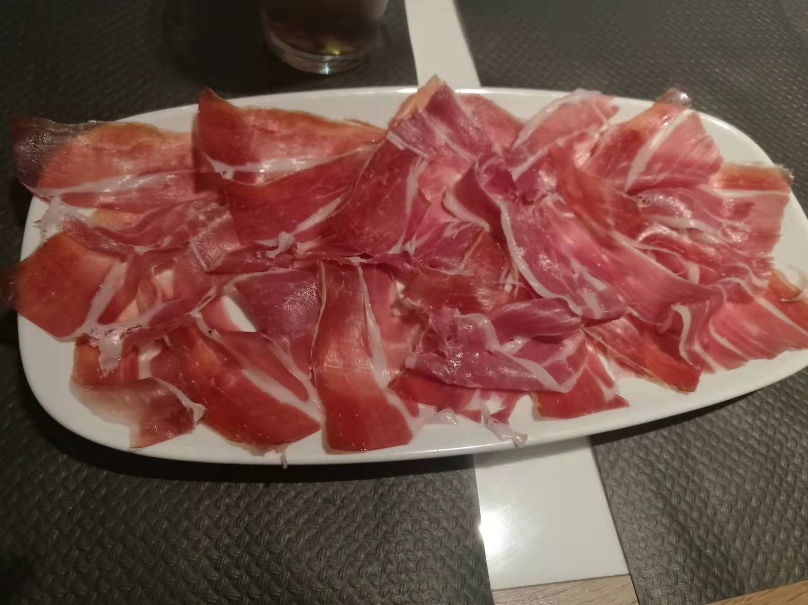
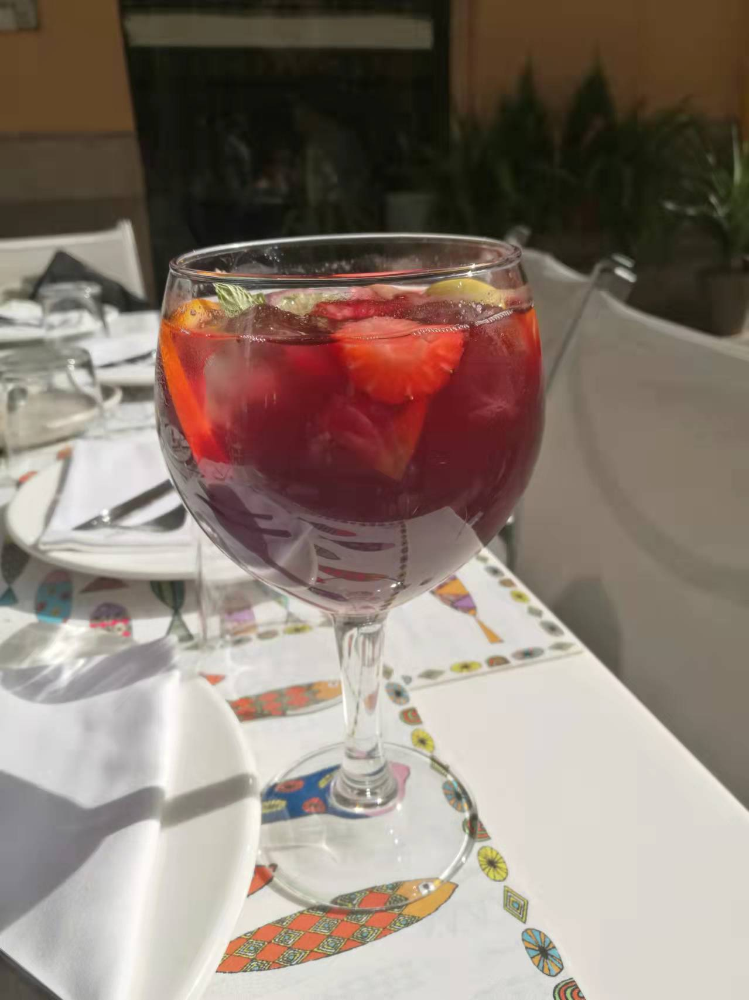
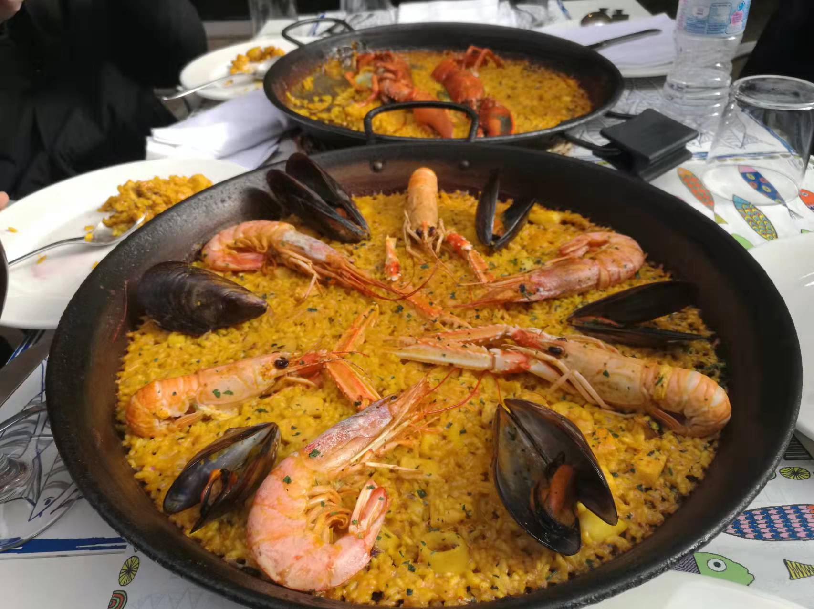
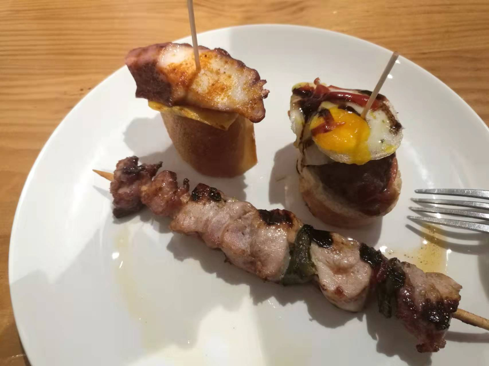
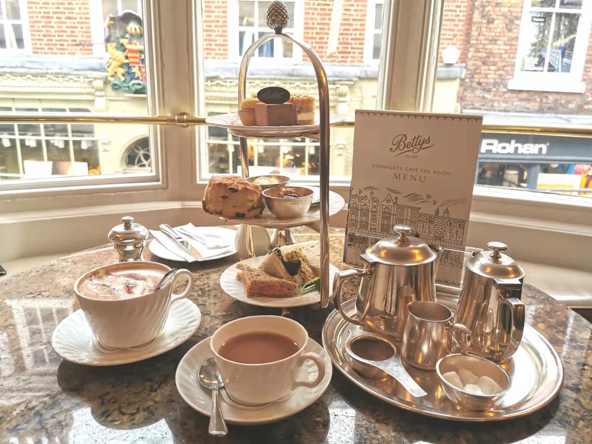
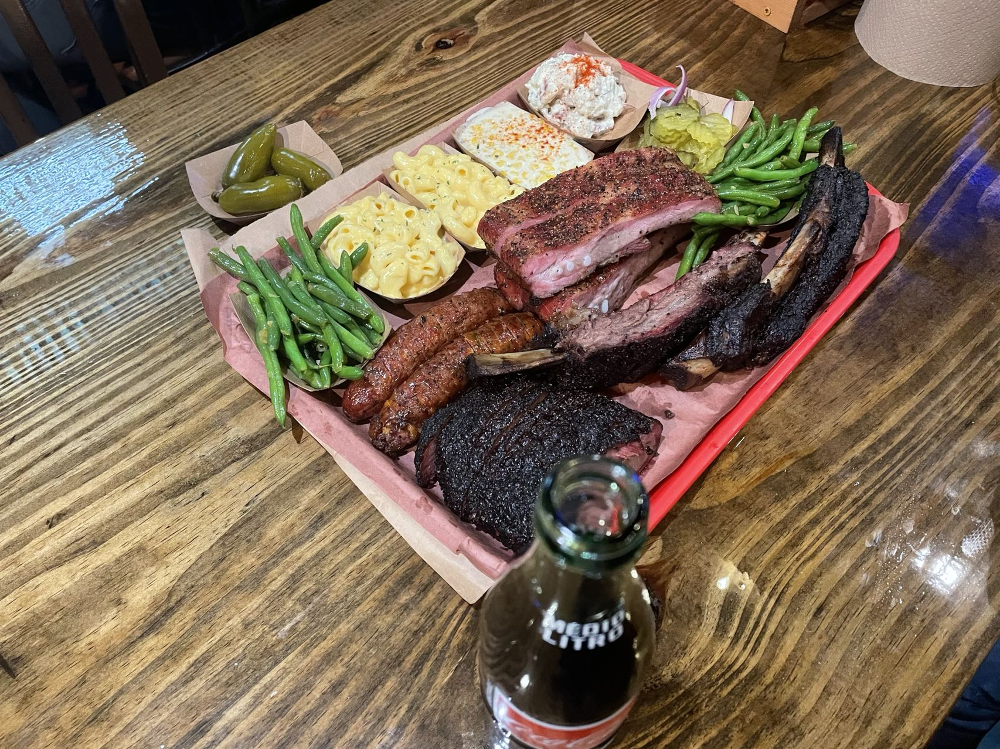
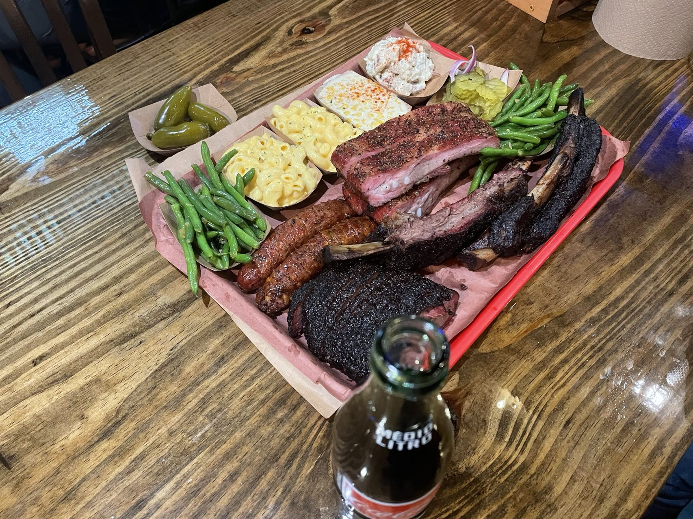

My favourite cuisines when travelling globally...
In the past 5 years, I have travelled to many places in Asia, Europe and America. Every place has its unique food culture.
Asia
In Eastern Asia, Jananese ramen and Korean-style BBQ are two of my favourite foods.
Spain
Spain is famous for its Jamón, tapas and Paella. It also has a special kind of cocktail called Sangria.
   England
Have a good relax enjoying British-style afternoon tea!
United States
There is a variety of food cultures in the United States.
 
